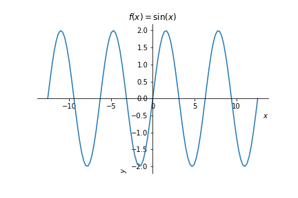
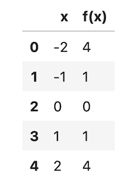
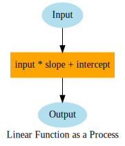
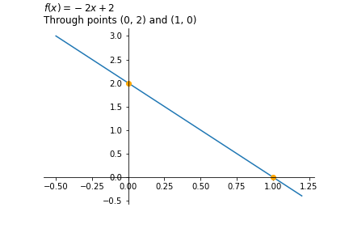

Functions#

Definition
In mathematics, a function is a binary relation between two sets that associates every element of the first set to exactly one element of the second set. Typical examples are functions from integers to integers, or from the real numbers to real numbers.

Representations of Functions#
Functions can be represented in multiple ways and it is important that we understand four specific approaches for expressing relationships. We identify the four representations as words/text, tables, symbols, and graphs. In our class we use contemporary technology to do these things. Specifically, we will use:
Words: Markdown
Tables: Google Sheets and Python
Symbols: \(\text{LaTeX}\)
Graphs: Google Sheets and Python’s
Matplotliblibrary
Words
- Given a positive integer, return its square.
- Five fewer than ten times the input value.
- Given a sentence, return the final character.
- Given an image, return the average pixel value.
- Given a random number, return 1 if the number is less than 40, otherwise return -1
Tables
When we see functions expressed as tables we will typically use these as organizing and storage tools. For example, your familiar spreadsheet could store a functions return values on a specified domain. In the table below, we have our first function from above expressed as a table of values. Here, we limit the domain from integers 0 to 7.
| x | f(x) | |
|---|---|---|
| 0 | -2 | 4 |
| 1 | -1 | 1 |
| 2 | 0 | 0 |
| 3 | 1 | 1 |
| 4 | 2 | 4 |
Symbols
In addition to our words and tables, we can use symbols to represent functions. Our relationships will bear some arbitrary name; usually \(f\) or \(g\) or something boring but we have free reign here. In this class, I expect that you learn to use LaTeX to type mathematical symbols including functions. Below, we have the text and result of the function above as LaTeX.
latex code: $f(x) = x^2$
\(\text{result} \rightarrow f(x) = x^2\)
Graphs
The final representation is a visual one, usually where we consider the inputs to the function as the horizontal axis and the outputs as the vertical axis. Practically, this means if we were to evaluate all points in a given domain, and plot each ordered pair \((x, f(x))\). The example below plots all points in \([-4\pi, 4\pi]\) under the relation \(f(x) = \sin(x)\).

Our Medium: Using The Jupyter Notebooks#
Write text with Markdown.
Write mathematical symbols with LaTeX.
Use
matplotlibto plot functionsUse
pandasto create tables of functions
Markdown
Markdown is a simplified markup language with minimal syntax. Additionally you can write most HTML tags in a markdown cell and it will render. See the github cheatsheet for further reference here.
LaTeX
LaTeX is a syntax for typesetting mathematics. We can write LaTeX in markdown cells using the $ or $$ enclosures. We will cover specifics as we go, but usually a quick google search will give a hint for what it is you want to do and how.
matplotlib
matplotlib is a library we can use in python that is easy to use and readily available in the Jupyter notebook. Typically, we will import and alias the library as follows:
import matplotlib.pyplot as plt
Then, whenever we want to use it, we would write something like:
plt.plot(x, y)
pandas
pandas is a python library that has wide functionality for working with data as tables. We will use the library both to read in and manipulate data as well as to store information in tabular form. Similar to matplotlib we will typically import and alias the library as:
import pandas as pd
and then use as:
pd.DataFrame({'x': x, 'f(x)': f(x)})
which gives for x = [-2, -1, 0, 1, 2] and \(f(x) = x^2\) :

Your Learning Objectives#
CONCEPTUAL GOALS
Use linear functions to model data. Understand parameters of slope and intercept and how they effect the orientation of a line.
Use quadratic functions to model data. Understand how parameters of quadratics effect its orientation in space.
Use trignometric functions to model data. Understand how different parameters effect the orientation of sines and cosines.
Use exponential functions to model data. Understand how parameters effect the orientation of exponential functions in space.
Use logarithmic functions to transform data. Understand how different functions are effected by taking the logarithm.
TECHNICAL GOALS
Use
pythonto define functions and move between numbers, graphs, and tables of values.
Linear Functions#
In calculus, analytic geometry and related areas, a linear function is a polynomial of degree one or less, including the zero polynomial (the latter not being considered to have degree zero).
When the function is of only one variable, it is of the form:
where a and b are constants, often real numbers. The graph of such a function of one variable is a nonvertical line. a is frequently referred to as the slope of the line, and b as the intercept.
#!pip install graphviz
#below we import our graphviz library
#and make a basic function diagram
from graphviz import Digraph
dot = Digraph(comment = 'Linear Function', format = 'svg')
dot.attr('node', color='lightblue2', style='filled')
dot.node('x', 'Input')
dot.attr('node', color='orange', style='filled', edgecolor = 'black')
dot.node('f', 'input * slope + intercept', shape = 'box')
dot.attr('node', color='lightblue2', style='filled')
dot.node('y', 'Output')
dot.edges(['xf', 'fy'])
dot.attr(label='Linear Function as a Process')
dot.render();
---------------------------------------------------------------------------
ModuleNotFoundError Traceback (most recent call last)
Cell In[1], line 4
1 #!pip install graphviz
2 #below we import our graphviz library
3 #and make a basic function diagram
----> 4 from graphviz import Digraph
5 dot = Digraph(comment = 'Linear Function', format = 'svg')
6 dot.attr('node', color='lightblue2', style='filled')
ModuleNotFoundError: No module named 'graphviz'
Linear Functions Diagram#

Linear Functions Equations#
Slope Intercept Form
where \(m\) is the slope of the line and \(b\) is the \(y\)- intercept.
Point Slope Form
where \(m\) is the slope of the line and \((x_1, y_1)\) is an arbitrary point on the line.
Graphs of Linear Functions#

The Slope of the Line#
As the input changes by 1 unit, how does the output change.
Formally:
With slight rearrangement:
If we want to find a “next” \(y\)-value we can see:
Building Linear Functions#
###define the function
def f(x): return -2*x + 2
###define the values
###to evaluate the function at
#Below we use 100 equally spaced points from -2 to 2
import numpy as np
x = np.linspace(-2, 2, 101)
###plot the function
import matplotlib.pyplot as plt
plt.plot(x, f(x))
[<matplotlib.lines.Line2D at 0x7fa398a4a910>]
###make a table of values
###below we display every 20 values of the domain
x = np.array([-2, -1, 0, 1, 2])
import pandas as pd
pd.DataFrame({'x': x, 'f(x)': f(x)})
| x | f(x) | |
|---|---|---|
| 0 | -2 | 6 |
| 1 | -1 | 4 |
| 2 | 0 | 2 |
| 3 | 1 | 0 |
| 4 | 2 | -2 |
PROBLEMS#
Define the function \(g(x) = -4x + 5\). What is \(g(0)\), \(g(1)\), \(g(2)\), \(g(3)\).
How do you get from \(g(n)\) to \(g(n + 1)\) in general based on the above?
Given that \(f(0) = 3\) and that \(f(1) = 5\), write the equation for the line through the two points.
Draw a plot of your function on \(x \in [-2, 4]\).
Quadratic Functions#
In algebra, a quadratic function, a quadratic polynomial, a polynomial of degree 2, or simply a quadratic, is a polynomial function with one or more variables in which the highest-degree term is of the second degree.
As an equation in two variables, we will typically have an expression something like:
#basic quadratic
def f(x): return x**2
#plot
x = np.linspace(-2, 2, 100)
plt.plot(x, f(x))
plt.title('Plot of $f(x) = x^2$', loc = 'left');
#evaluate for different values of f
f(0), f(1), f(2), f(3), f(4)
(0, 1, 4, 9, 16)
#examine the rate of change between
#successive x values
f(1) - f(0), f(2) - f(1), f(3) - f(2), f(4) - f(3)
(1, 3, 5, 7)
QUESTION
Describe the quadratic functions rate of change based on what we see above.
Equation for Quadratics#
#explore the effect of a
fig, ax = plt.subplots(1, 3, figsize = (20, 6))
a_s = [-2, -1, 0, 1, 2]
for a in a_s:
def f(x): return a*x**2
ax[0].plot(x, f(x), label = f'a = {a}')
ax[0].legend();
ax[0].set_title('Changing $a$');
ax[0].grid();
#explore the effect of b
b_s = [-2, -1, 0, 1, 2]
for b in b_s:
def f(x): return (x + b)**2
ax[1].plot(x, f(x), label = f'b = {b}')
ax[1].legend();
ax[1].set_title('Changing $b$.');
ax[1].grid();
#explore the effect of c
x = np.linspace(-3, 3, 1000)
c_s = [-2, -1, 0, 1, 2]
for c in c_s:
def f(x): return x**2 + c
ax[2].plot(x, f(x), label = f'c = {c}')
ax[2].legend();
ax[2].set_title('Changing $c$.');
plt.grid();
fig.suptitle('Examining the effect of changing a, b, and c in\n$f(x) = a(x - b)^2 + c$', size = 20)
plt.tight_layout();

Problems#
Using what you know from our transformations above, determine a quadratic function for the given data where \(x= mpg\) and \(y = hp\).
import pandas as pd
cars = pd.read_csv('data/mtcars.csv', index_col = 0)
cars.head(2)
| mpg | cyl | disp | hp | drat | wt | qsec | vs | am | gear | carb | |
|---|---|---|---|---|---|---|---|---|---|---|---|
| Mazda RX4 | 21.0 | 6 | 160.0 | 110 | 3.9 | 2.620 | 16.46 | 0 | 1 | 4 | 4 |
| Mazda RX4 Wag | 21.0 | 6 | 160.0 | 110 | 3.9 | 2.875 | 17.02 | 0 | 1 | 4 | 4 |
def f(x): return x**2
x = np.linspace(10, 35, 1000)
plt.plot(x, f(x), color = 'red', label = '$x^2$')
plt.scatter(cars['mpg'], cars['hp'])
plt.xlabel('MPG')
plt.ylabel('HP')
plt.ylim(0, 400)
plt.legend();
Use your function to approximate the \(hp\) given that \(mpg\) is 21.5.
Considering that the true value for a Toyota Corona with 21.5 \(mpg\) is 97, describe the error in your prediction.
#make approximation with function
f(21.5)
462.25
#determine error
More Problems#
The Consumer Price Index (CPI) is a measure of the average change over time in the prices paid by urban consumers for a market basket of consumer goods and services. Indexes are available for the U.S. and various geographic areas. Average price data for select utility, automotive fuel, and food items are also available. – Source
cpi = pd.read_excel('data/bls_data.xlsx', skiprows = 11)
cpi = cpi.iloc[:, :-2]
cpi.head()
| Series ID | Year | Period | Value | |
|---|---|---|---|---|
| 0 | CWUR0000SAF1 | 1935 | M01 | 12.2 |
| 1 | CWUR0000SAF1 | 1935 | M02 | 12.4 |
| 2 | CWUR0000SAF1 | 1935 | M03 | 12.4 |
| 3 | CWUR0000SAF1 | 1935 | M04 | 12.6 |
| 4 | CWUR0000SAF1 | 1935 | M05 | 12.6 |
cpi.groupby('Year').mean().plot()
plt.title('CPI by Year: 1935 - 2020');

Use the information below to write a linear function to model the CPI.
Write one linear function to model the data from 1935 to 1975 and a second to model the data from 1975 to 2020.
Write a quadratic function to model the CPI data.
print(f'The CPI in 1935 was: {cpi.iloc[0].Value}\nand in 2020 was {cpi.iloc[-1].Value}')
The CPI in 1935 was: 12.2
and in 2020 was 268.044
cpi[cpi['Year'] == 1935].mean()
Year 1935.000000
Value 12.458333
dtype: float64
cpi[cpi['Year'] == 1975].mean()
Year 1975.000000
Value 59.783333
dtype: float64
cpi[cpi['Year'] == 2020].mean()
Year 2020.000000
Value 265.881071
dtype: float64
Trigonometric Functions#

In mathematics, the trigonometric functions are real functions which relate an angle of a right-angled triangle to ratios of two side lengths. – Source
Practically this means we will input an angle and return a value that is the sine or cosine or tangent etc.
def f(x): return np.sin(x)
def g(x): return np.cos(x)
x = np.linspace(-2*np.pi, 2*np.pi, 1000)
plt.plot(x, f(x), label = 'sin')
plt.plot(x, g(x), label = 'cosine')
plt.legend();
plt.grid();
Parameters
As we have before, we aim to understand the effect of each of the parameters on the function.
fig, ax = plt.subplots(2, 2, figsize = (20, 10))
#experiment with A
def f(x): return A*np.sin(x)
x = np.linspace(-2*np.pi, 2*np.pi, 1000)
for A in [-1, 1, 2]:
ax[0, 0].plot(x, f(x), label = f'A = {A}')
ax[0, 0].legend();
ax[0, 0].grid();
ax[0, 0].set_title('Graph of $y = A\sin(x)$');
#experiment with B
def f(x): return np.sin(B*x)
x = np.linspace(-2*np.pi, 2*np.pi, 1000)
for B in [-1, 1, 2]:
ax[0, 1].plot(x, f(x), label = f'B = {B}')
ax[0, 1].legend();
ax[0, 1].grid();
ax[0, 1].set_title('Graph of $y = \sin(Bx)$');
#experiment with C
def f(x): return np.sin(x + C)
x = np.linspace(-2*np.pi, 2*np.pi, 1000)
for C in [-1, 1, 2]:
ax[1, 0].plot(x, f(x), label = f'C = {C}')
ax[1, 0].legend();
ax[1, 0].grid();
ax[1, 0].set_title('Graph of $y = \sin(x + C)$');
#experiment with D
def f(x): return np.sin(x) + D
x = np.linspace(-2*np.pi, 2*np.pi, 1000)
for D in [-1, 1, 2]:
ax[1, 1].plot(x, f(x), label = f'D = {D}')
ax[1, 1].legend();
ax[1, 1].grid();
ax[1, 1].set_title('Graph of $y = \sin(x) + D$');
Modelling Sound#
Below we use a library called scipy to load in a sample .wav file. Our goal is to model this with a sin function using what we started with above.
from os.path import dirname, join as pjoin
from scipy.io import wavfile
import scipy.io
#loading sample data
data_dir = pjoin(dirname(scipy.io.__file__), 'tests', 'data')
wav_fname = pjoin(data_dir, 'test-44100Hz-2ch-32bit-float-be.wav')
samplerate, data = wavfile.read(wav_fname)
length = data.shape[0]/samplerate
time = np.linspace(0., length, data.shape[0])
#plot the data against a basic sin curve
plt.plot(time, np.sin(time), label = 'sin(x)')
plt.plot(time[::5], data[::5, 0::5], '--o', label = 'data')
plt.xlabel("Time [s]")
plt.ylabel("Amplitude")
plt.grid()
plt.legend()
plt.title('A Simple Sound File');

Exponential Functions#
In mathematics, an exponential function is a function of the form
where \(b\) is a positive real number not equal to 1, and the argument \(x\) occurs as an exponent. For real numbers c and d, a function of the form \(f(x)=ab^{cx+d}\) is also an exponential function.
fig, ax = plt.subplots(1, 3, figsize = (20, 5))
#experiment with a
def f(x): return a*2**x
x = np.linspace(-1, 4, 1000)
for a in [-1, 1, 2]:
ax[0].plot(x, f(x), label = f'a = {a}')
ax[0].legend();
ax[0].grid();
ax[0].set_title('Plot of $f(x) = a2^x$');
#experiment with b
def f(x): return 2**(b*x)
x = np.linspace(-1, 4, 1000)
for b in [-1, 1, 2]:
ax[1].plot(x, f(x), label = f'b = {b}')
ax[1].legend();
ax[1].grid();
ax[1].set_title('Plot of $f(x) = 2^{bx}$');
#experiment with c
def f(x): return 2**(x + c)
x = np.linspace(-1, 1, 1000)
for c in [-1, 1, 2]:
ax[2].plot(x, f(x), label = f'c = {c}')
ax[2].legend();
ax[2].grid();
ax[2].set_title('Plot of $f(x) = 2^{x + c}$');
Exponential Models of Data#
Below we have population data on the country of Angola, your goal is to determine a rough exponential model to fit the data.
pops = pd.read_csv('data/pops.csv')
pops.head()
| Country Name | Country Code | Indicator Name | Indicator Code | 1960 | 1961 | 1962 | 1963 | 1964 | 1965 | ... | 2012 | 2013 | 2014 | 2015 | 2016 | 2017 | 2018 | 2019 | 2020 | Unnamed: 65 | |
|---|---|---|---|---|---|---|---|---|---|---|---|---|---|---|---|---|---|---|---|---|---|
| 0 | Aruba | ABW | Population, total | SP.POP.TOTL | 54211.0 | 55438.0 | 56225.0 | 56695.0 | 57032.0 | 57360.0 | ... | 102560.0 | 103159.0 | 103774.0 | 104341.0 | 104872.0 | 105366.0 | 105845.0 | 106314.0 | NaN | NaN |
| 1 | Afghanistan | AFG | Population, total | SP.POP.TOTL | 8996973.0 | 9169410.0 | 9351441.0 | 9543205.0 | 9744781.0 | 9956320.0 | ... | 31161376.0 | 32269589.0 | 33370794.0 | 34413603.0 | 35383128.0 | 36296400.0 | 37172386.0 | 38041754.0 | NaN | NaN |
| 2 | Angola | AGO | Population, total | SP.POP.TOTL | 5454933.0 | 5531472.0 | 5608539.0 | 5679458.0 | 5735044.0 | 5770570.0 | ... | 25107931.0 | 26015780.0 | 26941779.0 | 27884381.0 | 28842484.0 | 29816748.0 | 30809762.0 | 31825295.0 | NaN | NaN |
| 3 | Albania | ALB | Population, total | SP.POP.TOTL | 1608800.0 | 1659800.0 | 1711319.0 | 1762621.0 | 1814135.0 | 1864791.0 | ... | 2900401.0 | 2895092.0 | 2889104.0 | 2880703.0 | 2876101.0 | 2873457.0 | 2866376.0 | 2854191.0 | NaN | NaN |
| 4 | Andorra | AND | Population, total | SP.POP.TOTL | 13411.0 | 14375.0 | 15370.0 | 16412.0 | 17469.0 | 18549.0 | ... | 82427.0 | 80774.0 | 79213.0 | 78011.0 | 77297.0 | 77001.0 | 77006.0 | 77142.0 | NaN | NaN |
5 rows × 66 columns
pops[pops['Country Name'] == 'Angola'].iloc[:, 4:].T.reset_index().plot(legend = False, grid = True)
plt.ticklabel_format(axis="y", style="sci", scilimits=(0,15))
plt.xlabel('Years since 1960')
plt.ylabel('Population')
plt.title('Angola population data');

Summary#
Our goals this week are to understand some different kinds of functions and how we might use these to model certain phenomenon. Where we are going is to actually use calculus to optimize the parameters and understand what the “best” parameters given the data are. Before doing so we want to build our facility with moving between these representations using a specific technology. For us, that means using Jupyter notebooks and Python, so I would prefer to continue to build our skills moving between representations quickly. Here are your exercises.
Build a linear function \(f(x) = -\frac{1}{2}x + 4\) on \(x \in [-3, 3]\); create a graph and table.
Build a linear function \(f(x) = \frac{5}{2}x - 7\) on \(x \in [-3, 3]\); create a graph and table.
Build a quadratic function \(f(x) = 3(x - 1)^2 - 4\) on \(x \in [-5, 5]\); create a graph and table.
Build a cosine function \(f(x) = 2\cos{x^2}\) on \(x \in [-3\pi, 3\pi]\); create a graph and table.
Build an exponential function \(f(x) = 3*(100)^x\) on \(x \in [-3, 3]\); create a graph and table.